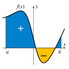

time_integral
operation

Source: Wikipedia
Wikipedia Page (Something wrong with this association? Let us know.)
Wikidata Page (Something wrong with this association? Let us know.)
Occurs in:
- land_surface_snow_accumulation__time_integral_of_volume_flux
- drainage-basin_outlet_water_flowing_x-section__time_integral_of_volume_rate
- soil_surface_water_infiltration__time_integral_of_volume_flux
- soil_phreatic-zone_top_water_recharge__time_integral_of_volume_flux
- atmosphere_water_precipitation__time_integral_of_leq_volume_flux
- soil_surface_water_evaporation__time_integral_of_volume_flux
- crop_water_transpiration__time_integral_of_volume_flux
- crop_residue_decomposition_pool_carbon_respiration__time_integral_of_mass_flux
- roots-and-rhizodeposits_production__time_integral_of_mass-per-area_rate
- soil_profile_bottom_water_drainage_ammonium_leaching__time_integral_of_mass_flux
- soil_profile_bottom_water_drainage_nitrate_leaching__time_integral_of_mass_flux
- land_surface_storm_water_runoff__time_integral_of_mass_flux
- land_surface_snow_accumulation__time_integral_of_mass_flux
- land_surface_snow_meltwater__time_integral_of_mass_flux